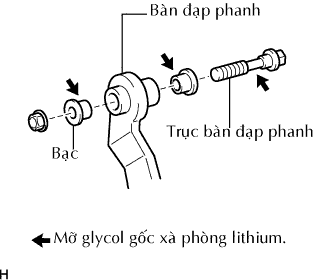

BÀN ĐẠP PHANH > LẮP RÁP |
| 1. LẮP MIẾNG LÓT BÀN ĐẠP PHANH |
Lắp má phanh vào bàn đạp phanh.
| 2. LẮP CỤM CÔNG TẮC ĐÈN PHANH |
 |
Lắp bộ điều chỉnh vào giá đỡ.
Lắp công tắc vào bộ điều chỉnh cho đến khi nó chạm nhẹ vào bàn đạp.
 |
Vặn công tắc 1/4 vòng theo chiều kim đồng hồ.
Lắp giắc công tắc với công tắc.
Kiểm tra khe hở công tắc.
| 3. LẮP BÀN ĐẠP PHANH |
|  |
Bôi mỡ Glycol gốc xà phòng Lithium lên 2 bạc mới và trục.
Lắp bàn đạp và 2 bạc vào giá đỡ với trục và đai ốc.